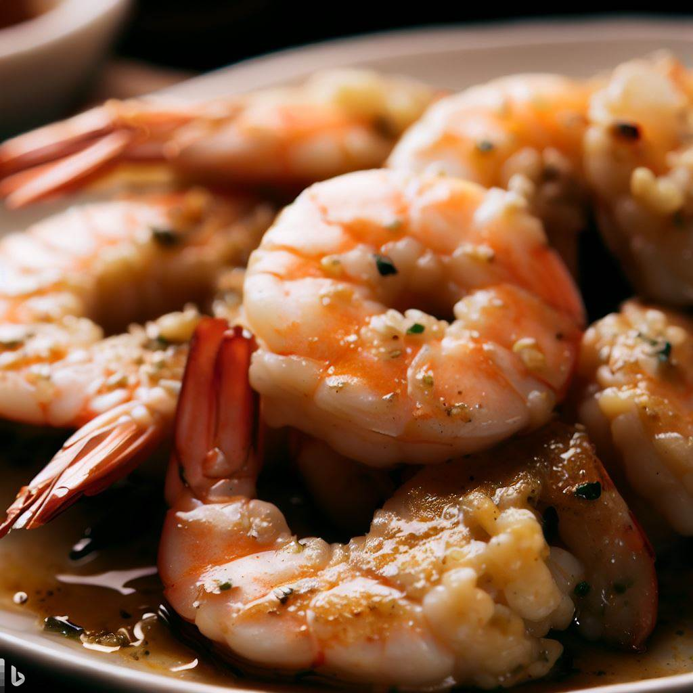

Easy eats
Garlic Butter Shrimp

| Ingredients |
Amount |
| Large shrimp |
1 lb. |
| Garlic |
3 cloves, minced |
| Unsalted butter |
1/4 cup |
| Fresh parsley leaves |
1/4 cup, chopped |
| Lemon juice |
1 tablespoon |
| Salt |
To taste |
| Black pepper |
To taste |
Directions:
- In a skillet over medium-high heat, melt butter and sauté garlic until fragrant.
- Add shrimp to the skillet and season with salt and black pepper.
- Cook shrimp for 2-3 minutes on each side, until pink and cooked through.
- Stir in lemon juice and parsley, and cook for another minute.
- Serve immediately. Enjoy!